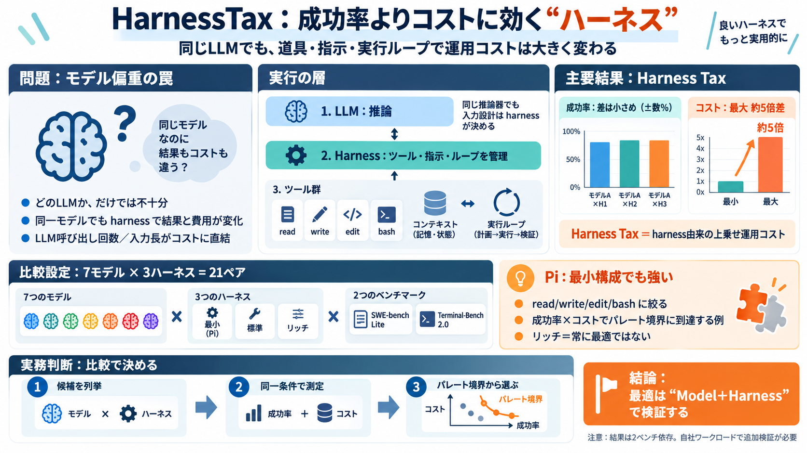

Claude Code vs Codex vs Aider vs OpenCode vs Pi (2026)
Terminal-Bench 2.0 deserves a separate mention because it’s more relevant for agentic tasks than SWE-bench. It tests aut…

Terminal-Bench 2.0 deserves a separate mention because it’s more relevant for agentic tasks than SWE-bench. It tests aut…
Codex with GPT-5.6 Sol and Claude Code with Opus 5 lead, and they are half a point apart: 89.5% and 89.1% on Terminal-Be…
be in 2026, right? Like I'm definitely like thinking ahead and I'm seeing like basically my my my sort of banner tweet f…
AI agents may soon become capable of autonomously completing valuable, long-horizon tasks in diverse domains. Current be…
We use the LiteLLM interface to deploy an agent harness, an agent evaluation framework designed to benchmark agents agai…